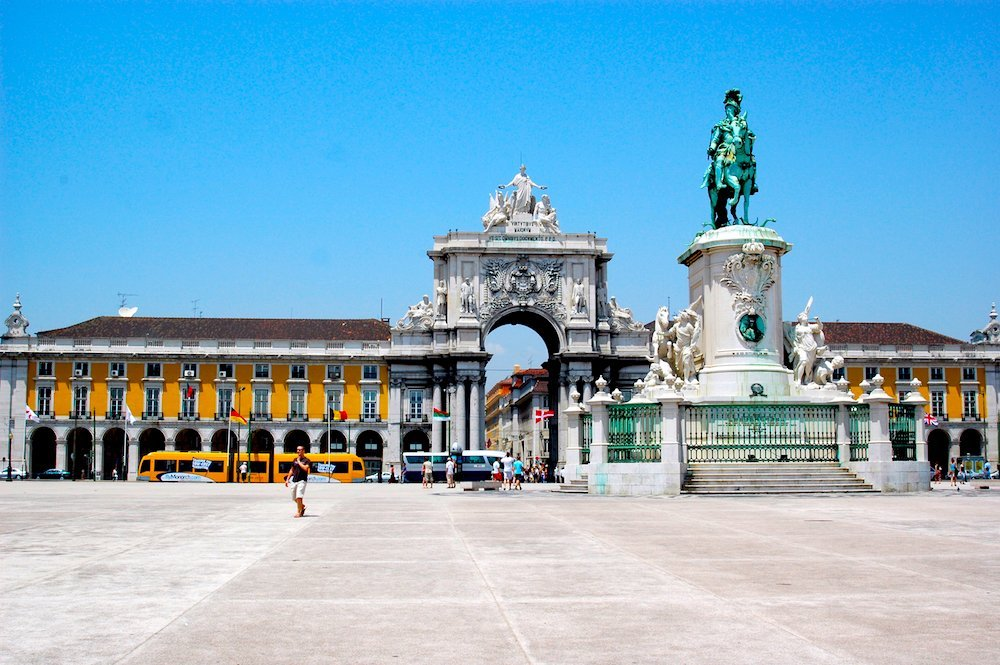

Roteiro da Tour

Terreiro do Paço
O ponto de partida da nossa tour – um dos locais mais emblemáticos de Lisboa, símbolo da ligação da cidade ao rio Tejo.

Miradouro de Santa Luzia
Com uma das vistas mais bonitas sobre Alfama e o Tejo, o Miradouro é um espaço perfeito para refletir sobre sustentabilidade urbana.

Feira da Ladra
Encerramos a tour num dos mercados mais antigos da cidade, onde o reuso e a economia circular se vivem no dia a dia.